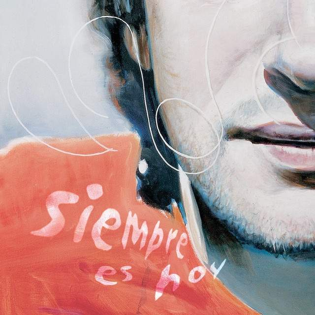
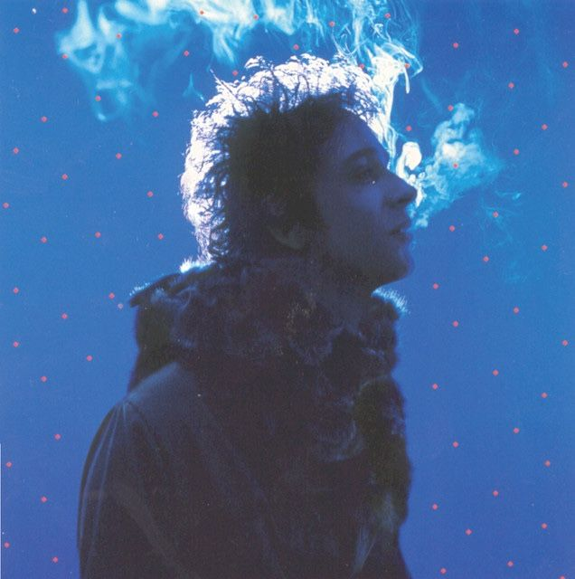
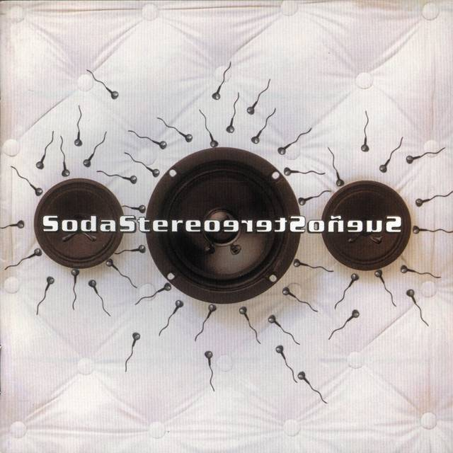
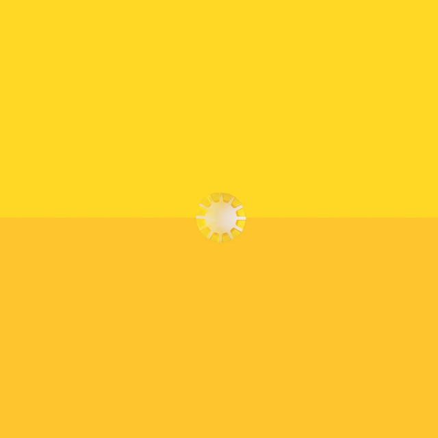
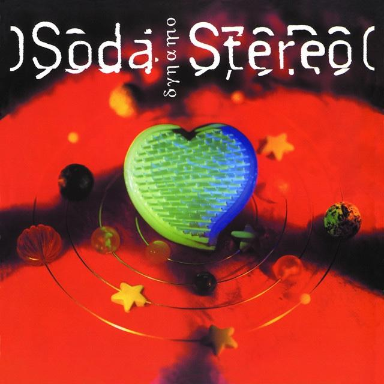
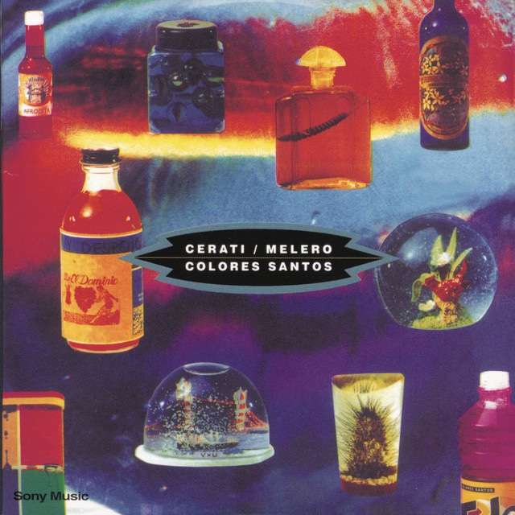
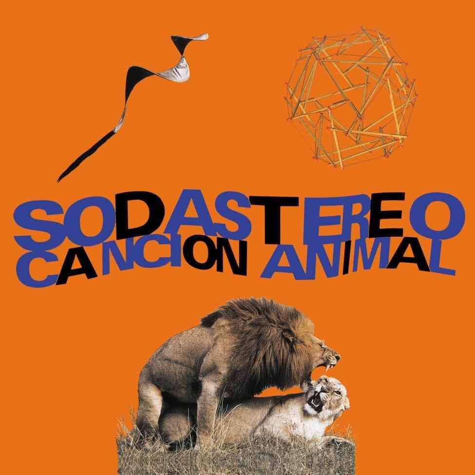
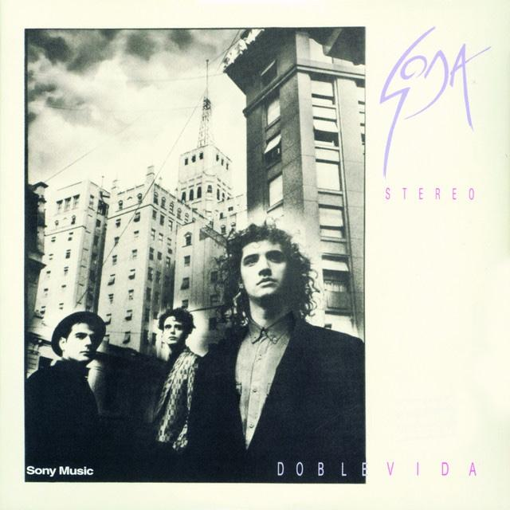
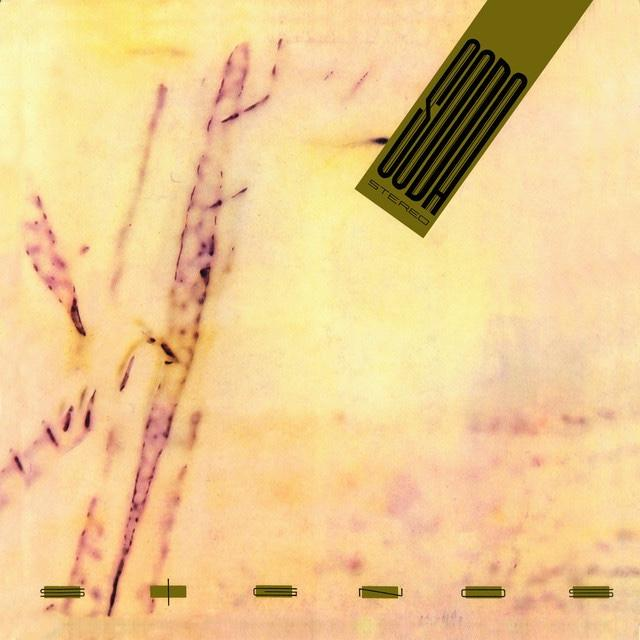
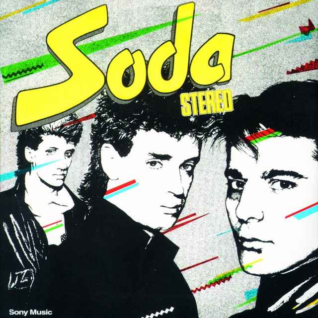

Fuerza Natural
Gustavo Cerati
27 de agosto de 2009
27 de agosto de 2009

4 de abril de 2006

11 de noviembre de 2002

6 de noviembre de 2001

28 de junio de 1999

20 de junio de 1995

11 de noviembre de 1993

26 de octubre de 1992

25 de marzo de 1992

7 de agosto de 1990

15 de septiembre de 1988

10 de noviembre de 1986
21 de noviembre de 1985

27 de agosto de 1984